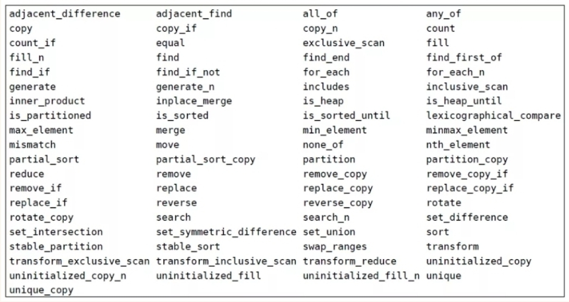
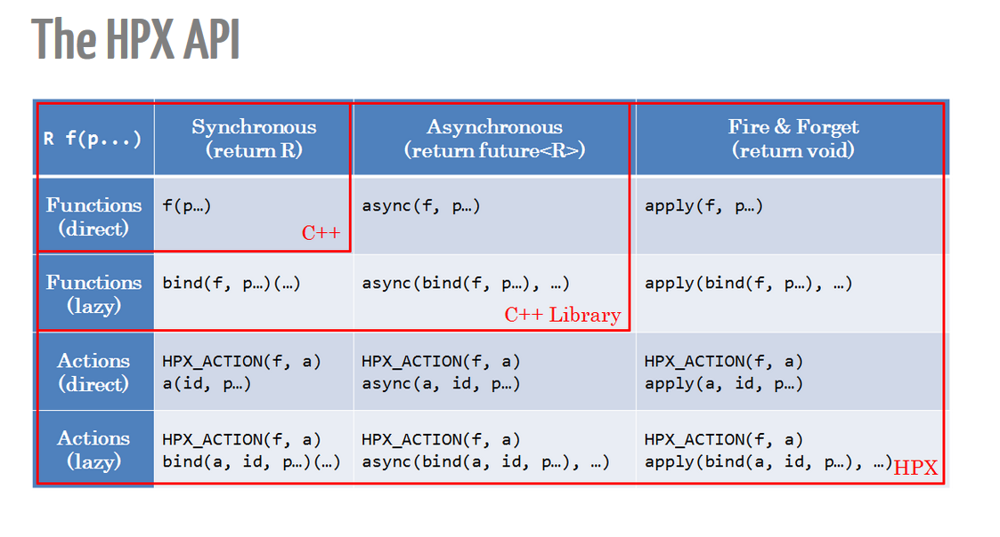

Reference: http://stellar-group.github.io/hpx/docs/html/index/s06.html
Index: http://stellar-group.github.io/hpx/docs/html/index/s05.html
See Also: context
See Also: context switch
http://stellar-group.org/2015/07/hpx-and-cpp-futures/
(wait_all, wait_all_n, wait_any, wait_any_n, wait_each, wait_each_n, wait_some, wait_some_n)
(when_all, when_all_n, when_any, when_any_n, when_each, when_each_n, when_some, when_some_n)

when do we ever use this???
for parallel execution
http://stellar-group.org/2015/05/hpx-and-cpp-executors/
See Also: .on() (rebind...)
in hpx/runtime/threads/executors and in hpx/parallel/executors
See Also: hpx::parallel::execution::parallel_policy aka hpx::parallel::execution::par
See Also: hpx::parallel::execution::parallel_policy aka hpx::parallel::execution::par
(hpx::parallel::local_priority_queue_executor, hpx::parallel::local_queue_executor , hpx::parallel::static_priority_queue_executor)
See Also: Execution policies
for controlling execution, not necessarily parallel
See Also: .with() (rebind)
See Also: Execution policies
(Executors and Executor Traits, Executor Parameters and Executor Parameter Traits)
See Also: is a parameter of ..., is a parameter of ...
See Also: asynchronous are extensions of the standard Return a future<R>
See Also: default executor corresponding to execution policy seq, default executor corresponding to par
See Also: asynchronous are extensions of the standard Return a future<R>
(hpx::parallel::execution::parallel_policy aka hpx::parallel::execution::par, hpx::parallel::execution::parallel_task_policy aka hpx::parallel::execution::par(task) or is it just hpx::parallel::execution::task, hpx::parallel::execution::unsequenced_policy aka hpx::parallel::execution::unseq or is it parallel_unsequenced_policy, hpx::parallel::execution::parallel_vector_policy aka hpx::parallel::execution::par_vec, hpx::parallel::datapar_execution, hpx::parallel::datapar_execution(task))
(hpx::parallel::execution::sequenced_policy aka hpx::parallel::execution::seq, hpx::parallel::execution::sequenced_task_policy aka hpx::parallel::execution::seq(task))
See Also: Executors (rebind...)
See Also: Executor parameters (rebind)

See Also: Distributed programming
example: cf component_in_executable.cpp§
See Also: Actions
See Also: hpx::parallel::execution::sequenced_task_policy aka hpx::parallel::execution::seq(task), hpx::parallel::execution::parallel_task_policy aka hpx::parallel::execution::par(task) or is it just hpx::parallel::execution::task